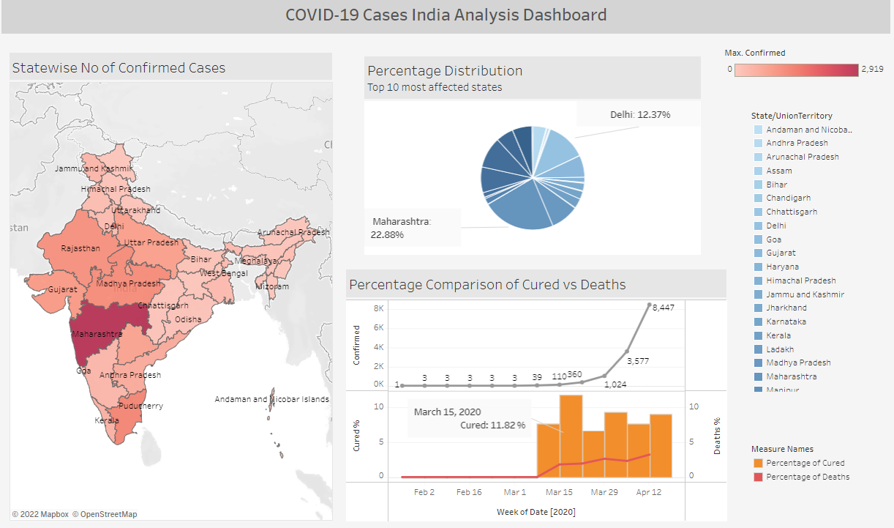

Data-Analysis End-to-end Project (R)
This is a end-to-end data analysis project that includes all six phases of data analysis: Ask, Prepare, Process, Analyze, Share, and Act.
The dataset used for the project is the Chicago Bike-share data of 12 months, which is
approximately 600 MB in size. I completed the project using R in the RStudio platform.
It includes data cleaning, effective data analysis supported with clear data visualization.
Successfully came up with meaningful insights which will help marketing teams to increase the number
of annual members and convert the casual riders into annual members.


Performed Data cleaning operations on the US Presidents raw dataset including dealing with null values, reformatting
the data, removing duplicates, removing incorrect entries and redundant data.
In this project, I identified, analyzed and visualized trends in accidents by performing Exploratory Data Analysis on the "US Accidents" dataset using libraries like Pandas, Numpy, Seaborn and Matplotlib in Python.

Achieved to transform complex data into a simple and clean format by performing data cleaning operations including reformatting the data, removing duplicates values, dealing with missing data and dropping unwanted columns using SQL queries in MS SQL Server.
Tableau DATA VISUALIZATION

Developed a dashboard displaying Covid-19 cases analysis in India,
which shows the most infected states, the trend of increasing confirmed cases, and
a comparison of the percentages of cured patients and deaths.
Power BI Data visualization

Developed a dashboard displaying Covid-19 cases analysis in India including the
day-wise cases count, day-wise scheduled appointments, Call reasons and the location-wise cases.
Note: Being non-premium version this dashboard needs permission to access.

In this project, I worked on a raw Twitter database data to find the flaws in design, then created a normalised design.
Then I use SQL queries to create tables and populate them with clean data. Finally I run advanced queries to retrieve the data.

This is my Final-Year Project in which I build the Conformal Prediction Machine Learning algorithm in Python from scratch and used it for Transfer Learning.
I secured a 80% Distinction grade for this project.
Python Implementation from scratch

Implemented the Nearest Neighbours machine learning algorithm in python from scratch and succeeded to get the same results as the in-built method.